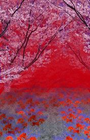

- Welcome to Touhou Wiki!
- Please register to edit. For assistance, check in with our Discord server or IRC channel.
Muenzuka
Muenzuka mɯᵝẽ̞nzɯᵝka̠ | |
|---|---|
|
 Muenzuka in Phantasmagoria of Flower View
| |
| Location |
At the end of the Road of Reconsideration |
Appearances | |
| Official Games | |
| |
| Print Works | |
| |
Muenzuka (無縁塚, lit. "Mound of the Nameless") is a small, wooded area located at the end of the Road of Reconsideration, known for its poisonous, deep red-colored red spider lilies. It is the graveyard of humans who don't have relatives (and are usually from outside Gensokyo). Many treasures from the Outside World make their way to Gensokyo by floating here.
General Information[edit]
Muenzuka is the resting place for the nameless dead. In Gensokyo, where human corpses are not neglected due to the youkai, the nameless corpses are cremated and laid to rest here. Because it is a place for the dead, and because humans quite often become phantoms after death, it is quite close to the Netherworld, as well as the Outside World. Normally, the barriers do not intersect, but that is happening here. For this reason, maintaining one's presence within one realm is difficult. However, apparently people are known to appear here from the Outside World as well, happening to fall into it by chance. It is also the home of purple cherry blossom trees, some of the most beautiful flower in Gensokyo. When the flowers of these cherry blossoms fall, the deceased of Muenzuka will be released from their hesitation and will finally progress to the Road of Liminality.
The purple cherry blossoms purify the soil of Muenzuka, and once per year, bloom to sever all hesitation. Even for Gensokyo, these are quite peculiar youkai cherry trees. Those flower petals that drop by ones and twos create a sight reminiscent of Muenzuka itself weeping, an illusion that will beguile any viewer. This might be the most perfect place for flower viewing, or so one might think, but the sorrowful sights create such sadness that there is no one who is able to make merry while watching them.
It is the residence of Nazrin, who lives there in search of treasure.[1] In addition, Rinnosuke Morichika is known to go there often to collect goods for his shop Kourindou. Despite being a small area enclosed by trees, it is known to be one of the most dangerous place in Gensokyo for both the humans and youkai.
Background Information[edit]
It is named after a Japanese Buddhist term "muen-botoke" (無縁仏), meaning "a dead person or soul lacking their relatives by blood and marriage who arrange their grave".
Muenzuka's Appearances[edit]
Games[edit]
- Phantasmagoria of Flower View
Muenzuka appeared as a stage location in Phantasmagoria of Flower View, in which Eiki Shiki, Yamaxanadu is dedicated to this location. The location is generally the final stage for most of the casts' scenarios, having Eiki as the final boss of the game. Eiki, who is lacking any souls to judge upon due to Komachi Onozuka slacking off, is interrupted by a number of various residents because they were curious on the number of flowers blooming, where Eiki ends up lecturing them on what negative personalities they've got and threatens to them to be sinned. They defeat her, only to find that the incident has yet not being cleared. On Eiki's scenario, Reimu Hakurei comes back here wondering why there are still a lot of spirits and flowers, thus being the final boss of Eiki's scenario located at Muenzuka.
Spin-offs[edit]
- Shoot the Bullet
Muenzuka appears in Shoot the Bullet on stage 10, the Final stage, and Ex-7 & 8. On Stage 6, Aya Shameimaru encounters Komachi Onozuka and Eiki Shiki, Yamaxanadu to try and take photos of their danmaku. The previous stage is at Eientei. There are 8 scenes total within the stage. Notice from the image that there isn't as many red spider lilies as there were from the previous game. Additionally on the Extra stage, after Aya met Fujiwara no Mokou at Eientei, she will come here again to encounter Suika Ibuki, trying to take photos of her danmaku. By this point, Aya should've complete the whole game.
Gallery[edit]
Muenzuka in Shoot the Bullet
Muenzuka, as illustrated in Perfect Memento in Strict Sense
Muenzuka in Strange and Bright Nature Deity